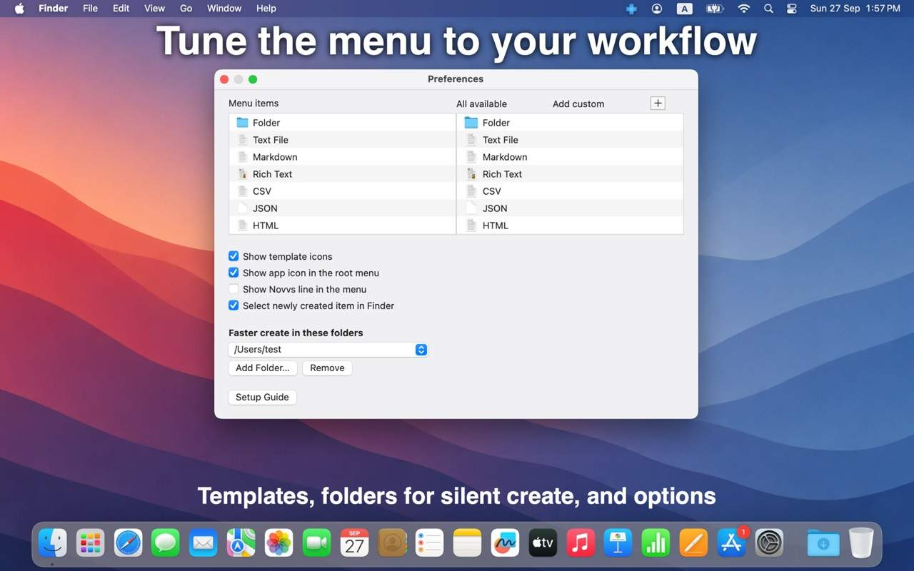
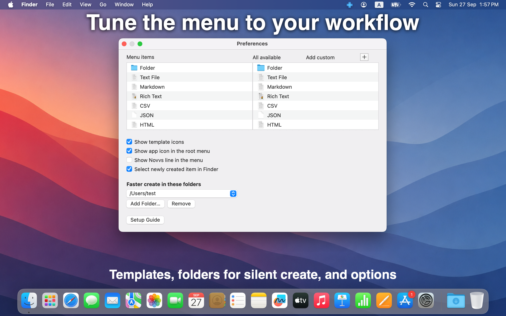

Tune the menu to your workflow.
Enable only the types you use, show icons, and select the new item in Finder after create. Grant folders for silent create — no Save dialog every time.
Preferences stay a click away from the menu bar icon. Setup Guide included.

